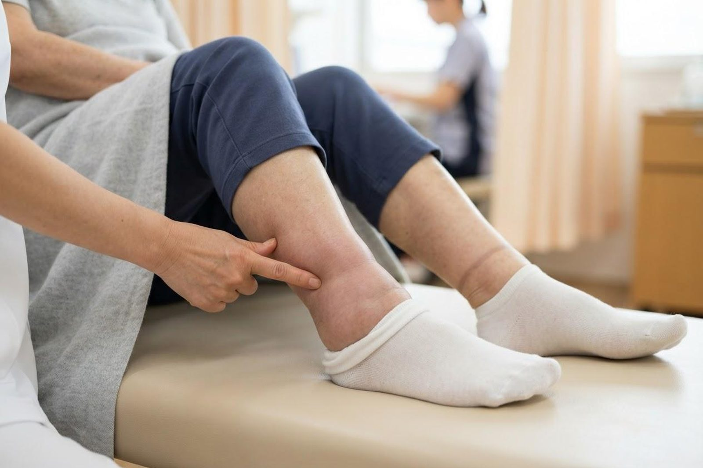

夕方になると足がむくみます。放っておいて大丈夫でしょうか？
A. 回答夕方に両足のすねや足首がむくみ、一晩眠ると翌朝には戻っている——このタイプのむくみは、立ち仕事やデスクワークなど、長く同じ姿勢を続けたことによる一時的なものが多いとされています。ただし、足のむくみ（浮腫：ふしゅ）は心臓・腎臓・肝臓・甲状腺などの病気が背景にあって起こる場合もあります。とくに片足だけが急に腫れて痛みや熱感があるとき、むくみに息切れや動悸を伴うときは、早めに医療機関にご相談ください。足のむくみをどこで診てもらうか迷われたときは、まず内科・循環器内科が相談先の目安になります。

足がむくむ主な原因
むくみは、血管の外の組織に水分がたまった状態を指します。原因は生活習慣によるものから内臓の病気によるものまで幅広く、一般的には次のようなものが挙げられます。
- 長時間の同じ姿勢・運動不足：立ちっぱなし、座りっぱなしが続くと、ふくらはぎの筋肉のポンプ作用が働きにくくなり、重力で足に水分がたまりやすくなるとされています。夕方に強く、朝には軽くなるのが典型的なパターンです。
- 塩分のとりすぎ・水分バランスの乱れ：塩分を多くとると体が水分をためこみやすくなり、むくみとして現れる場合があります。
- 心臓・腎臓・肝臓の病気：心不全では心臓のポンプの働きが落ちて足に血液がうっ滞し、腎臓の病気やネフローゼ症候群、肝硬変では血液中のたんぱく質（アルブミン）が減るなどして、いずれも両足のむくみが出ることがあるとされています。
- 甲状腺の機能の低下：甲状腺ホルモンの働きが低下すると、押してもへこみにくいタイプのむくみが出て、だるさや寒がり、体重増加を伴う場合があります。
- 下肢静脈瘤・リンパの流れの滞り：足の静脈の弁の働きが弱くなる下肢静脈瘤や、手術・放射線治療の後などにリンパの流れが滞ることで、片側に偏ったむくみが続くことがあります。
- お薬の影響：血圧やホルモン、痛み止めなど一部のお薬で、むくみが出ることがあるとされています。服用中のお薬は自己判断で中止せず、受診時にお薬手帳をご持参ください。
受診の目安
むくみそのものより、「片足か両足か」「急に出たか、少しずつか」「ほかの症状を伴うか」が、判断の手がかりになります。
判断に迷われるときは、救急安心センター事業「＃7119」（岡山県内で利用できます）にご相談いただけます。総務省消防庁の「全国版救急受診アプリ（Q助）」も目安になります。
すぐに受診を検討してください
- 片足だけが急に腫れ、ふくらはぎの痛み・圧痛・熱感・赤みを伴う——足の深い静脈に血のかたまりができる深部静脈血栓症の可能性があるとされます。血のかたまりが肺の血管に流れて肺塞栓症を起こすことがあるため、むやみに患部をもんだりせず、早めに医療機関にご相談ください。
- 片足の急な腫れに加えて、息苦しさや胸の痛みが出てきた場合は、来院よりも救急要請（119番）をご検討ください
- むくみに加えて、息切れ・胸の痛み・強い動悸がある
- 横になると息苦しく、夜中に呼吸が苦しくて目が覚める
- 1週間で2〜3kgなど、短期間に体重が急に増え、むくみも急速に広がってきた
- 顔やまぶたまで腫れてきた、尿の量が明らかに減った
早めの受診をおすすめします
- 一晩休んでも朝までむくみが取れず、何日も続いている
- すねを指で押すとへこみ、なかなか戻らない状態が続く
- だるさ、寒がり、体重の増加、皮膚の乾燥など、ほかの体調の変化を伴う
- 尿が泡立つ、尿の量が増減しているなど、尿の様子が変わってきた
- 足の血管がぼこぼこと浮き出ている、こむら返りを起こしやすい、片側だけむくみが強い
- 高血圧・糖尿病・心臓や腎臓の持病があり、むくみが以前より強くなった
- 新しいお薬を始めてから、むくみが出るようになった
当院での対応
いなだ医院は内科・循環器内科を標榜しており、足のむくみのご相談をお受けしています。まず、いつから・片足か両足か・どんなときに強くなるかをうかがい、足のむくみ方や皮膚の状態を実際に拝見します。そのうえで必要と判断した場合には、血圧や心電図、血液検査・尿検査などで、心臓・腎臓・肝臓・甲状腺の働きや貧血の有無などを確認していきます。生活習慣によるむくみと考えられる場合は、足を上げて休む、ふくらはぎを動かす、塩分を控えるといった日常での工夫についてもご説明します。精密検査や専門的な治療が望ましいと判断した場合には、地域の医療機関へのご紹介も行っています。朝7時から診療しておりますので、お仕事前の時間帯もご利用いただけます。
受診時に伝えていただきたいこと
- いつから、どのくらい続いているか（今日からか、数週間前からか）
- 片足だけか、両足か。左右差があるか
- 朝は戻るのか、一日中続くのか
- どんなときに強くなるか（立ち仕事の後、長時間の移動の後など）
- 息切れ・動悸・体重の変化・尿量の変化など、ほかに気になる症状はあるか
- 服用中のお薬（お薬手帳をお持ちください）、これまでの持病や手術歴
足のむくみが続く、片足だけ腫れている、息切れを伴う——気になるむくみは、そのままにせずご相談ください。
📞 086-525-0600最終更新：2026年8月26日